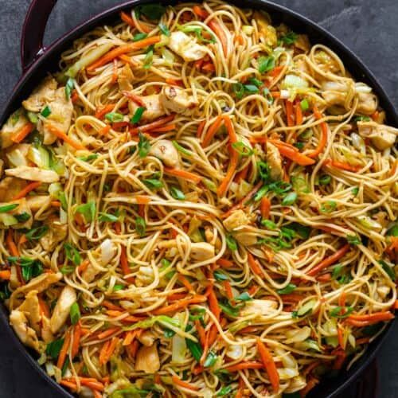
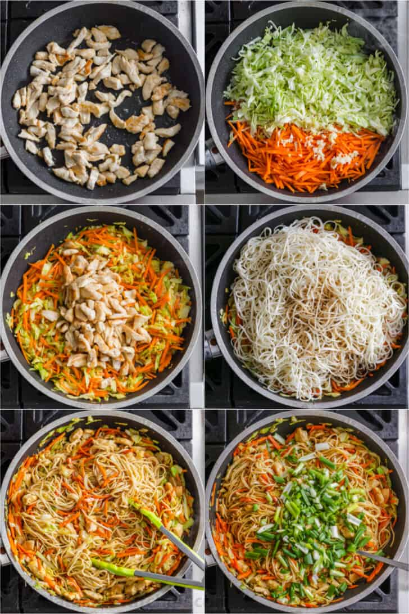

Home
Chicken Chowmein Recipe

Description
Chow mein is a traditional Chinese dish made with egg noodles and stir-fried veggies. We love adding a protein and our favorite is chicken, but you can try different meat or tofu. This dish is pan-fried so the noodles get a nice crisp to them and then tossed in a yummy sauce. Chow mein is perfect for those nights when you don’t want to dirty too many pans or make a big mess of the kitchen.
Chow mein gets its signature flavor from the thick, dark homemade sauce the noodles are tossed with. It’s the perfect balance of sweet and salty and makes putting down your chopsticks absolutely impossible.
Ingredients of Chicken Chowmein
- Chow Mein Noodles: Chow mein noodles are made with wheat and egg. They are very similar to Italian pasta noodles and have a wonderful bite to them. Most grocery stores carry dry chow mein noodles in the Asian aisle. But, if you are lucky, you will find pre-cooked chow mein noodles in the refrigerated section that can be thrown straight into your pan.
- Vegetables: Carrots, cabbage, green onions, and bean sprouts are the perfect combination of veggies to use for chow mein. However, they can easily be replaced with other veggies like bok choy, celery, broccoli, spinach, kale or baby corn. Feel free to get creative and use what you like or whatever you have hanging around in your fridge!
- Meats: Great quality chicken breasts are your best bet for slicing into chow mein-ready strips. If you like, feel free to swap chicken out for beef, shrimp or pork.
- Hot tip: Hosting vegetarians also? Use vegetable broth and set some of your noodles aside to toss them with cubes of baked tofu.
How to make Chowmein
- In a small mixing bowl, combine ingredients for chow mein sauce: oyster sauce, sesame oil, soy sauce, chicken broth, and cornstarch. Set aside.
- Cook noodles according to package instructions, set aside.
- Heat a large wok or pan. Add a bit of oil to the pan and cook chicken until it’s golden brown. Remove chicken and set asi
- Add carrots, cabbage and pressed garlic and saute for a few minutes until veggies are slightly softened.
- Add chicken back to the pan, followed by cooked noodles and pour the sauce right on top. Cook for about 2 minutes, distributing all that saucy goodness around evenly.
- Add chopped green onions and remove from the heat. Serve hot!

This Homemade Chow Mein Recipe is simple to make and oh-so-satisfying, these stir-fried noodles are sure to become a part of your weeknight dinner rotation.
Back to top